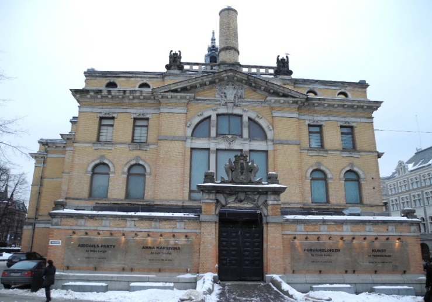
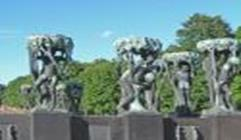

Осло - столица норвежского государства, расположен на берегу трех заливов - Вьерквика, Пипервика и Фрогнера. Город находится в окружении лесов на холмистой местности и занимает 453 кв. м. Население составляет свыше 470 тыс. чел. Осло- промышленный город. Здесь есть предприятия машиностроения и металлообработки, которые выпускают энергосиловое и целлюлозно-бумажное оборудование, платформы для морской добычи нефти, оборудование для электротехники и радиоэлектроники. Осло – транспортный узел Норвегии, откуда идут пути всех видов современного транспорта как по стране, так и за рубеж. От Восточного железнодорожного вокзала до королевского дворца тянется лавная улица города - Карл-Юхансгате. В этом древнем городе построек до 18 века сохранились очень мало, он застроен преимущественно современными домами. Сохранились лишь остатки Старого города с крепостью Акерсхус, сооруженной около 1300 г. и перестроенной в XV-XVI вв.
На восточном берегу залива Пипервика возвышается здание ратуши, сооруженное в 1933-1950 гг. Оно украшен снаружи богатой скульптурой, а внутри - росписями на исторические темы. К старинным зданиям относится здание Парламента - Стортинга, возведенного в 1886 г., и Национальный театр, построенный в 1891-1899 гг. Современные здания находятся, в основном, в западной же части города (Вестканте). Это особняки наиболее богатой части населения города и городские парки со знаменитым Фрогнер-парком. Это парк знаменит своим гигантским скульптурным ансамблем, созданным известным норвежским скульптором Хенриком Вигеландом. Около паркового ансамбля скульптур находится мемориальный музей скульптора.